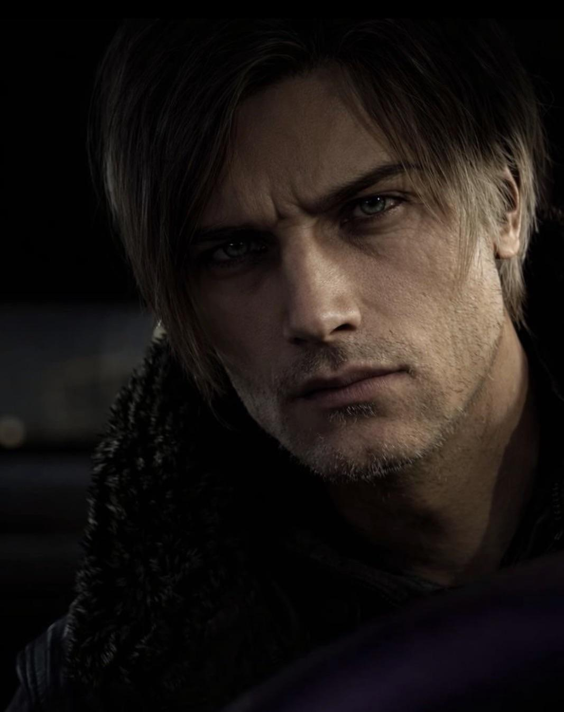
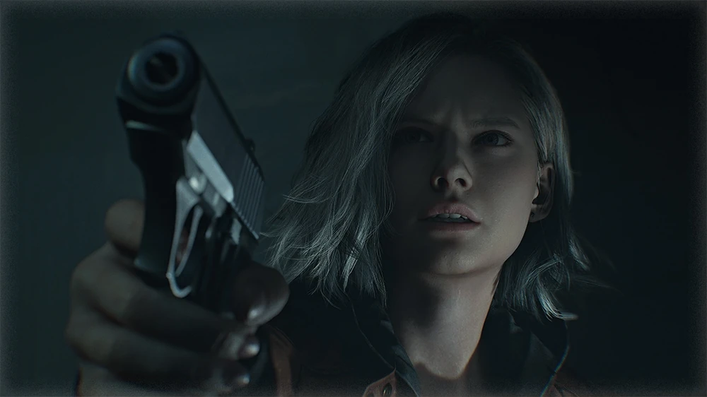
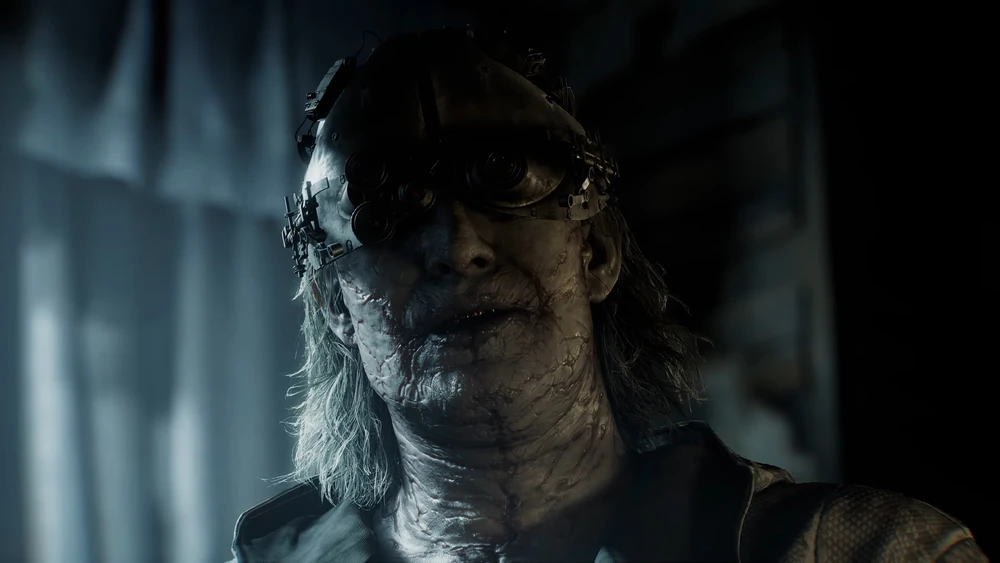
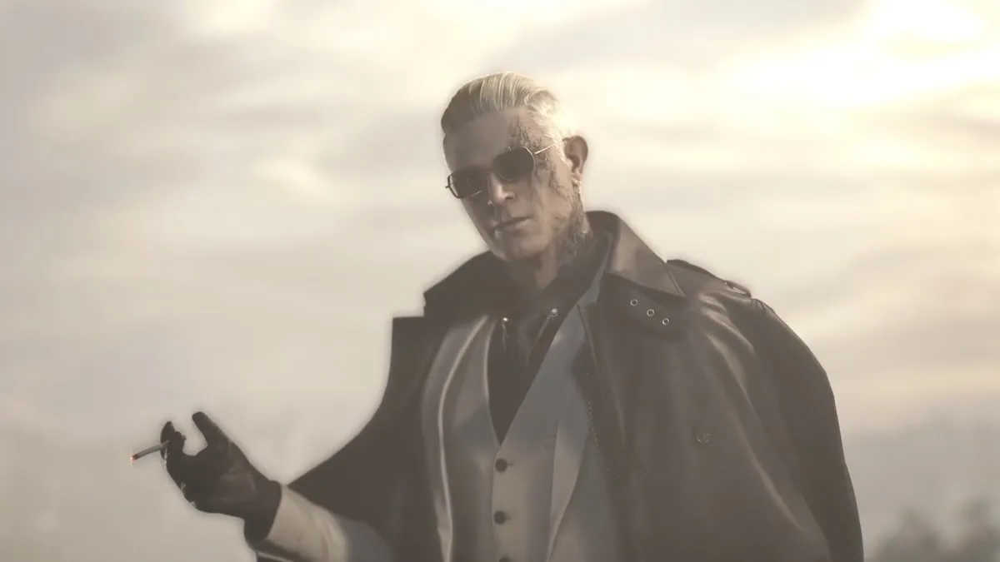
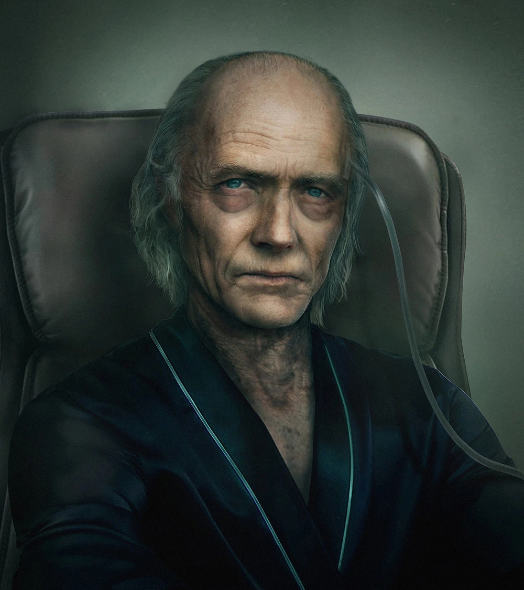

Ключевые герои

Леон Скотт Кеннеди
Опытный агент правительства. Его геймплей в Requiem ориентирован на экшен и выживание в экстремальных ситуациях («бросающий вызов смерти»).

Грейс Эшкрофт
Новое лицо в серии. Её сюжетная линия погружает игрока в глубокий психологический хоррор («захватывающий сердце»).

Алисса Эшкрофт
Журналистка-расследователь, выжившая в Раккун-Сити. Посвятила жизнь разоблачению Umbrella. Мать Грейс Эшкрофт, известная своим упорством в поиске истины.

Виктор Гидеон
Бывший исследователь Umbrella, скрывшийся от правосудия. Владелец центра «Роудс-Хилл», где под покровительством синдиката «Соединения» изучает «синдром Раккун-Сити» — скрытую форму Т-вируса.

Зено
Высокопоставленный агент синдиката «Соединения». Сотрудничает с Виктором Гидеоном ради поиска и разблокировки «Элписа» — секретного вируса Озвелла Спенсера.

Освелл Э. Спенсер
«Я должен был стать богом! Создавая новый мир, населённый расой сверхлюдей» — аристократ и основатель Umbrella. Безжалостный вирусолог, мечтавший переделать мир и создать расу сверхлюдей под своим началом, используя биоорганическое оружие.